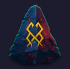
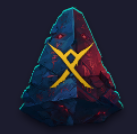
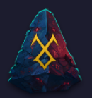
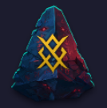
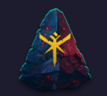
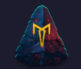
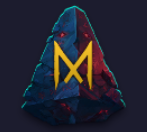

📖 Introduction
Emblems are one of the strongest long-term progression systems in Legend of Avatar. They provide powerful stat bonuses through Level Synergy, Grade Synergy, and Set Effects. Building your emblem collection correctly will dramatically increase your PvE performance.
🔷 Types of Emblem Synergy
There are two main types of synergy that determine an emblem's overall strength.
1. Emblem Level Synergy
- Unlocked by leveling your emblems.
- Provides permanent stat increases.
- The higher your emblem levels, the stronger your overall account becomes.
2. Grade Synergy
- Based on the rarity (grade) of your emblems.
- Higher-grade emblems unlock stronger bonus stats.
- Focus on improving grades over time for long-term growth.
📈 Beginner Upgrade Tips
⭐ Important
Avoid spending Emblem Essence until your emblem reaches Level 40.
- Save resources during the early game.
- Build a solid emblem collection first.
- Heavy investment becomes much more efficient after Level 40.
🏛️ Pillar Emblems (Highest Priority)
Pillar Emblems should be your first priority because they are the rarest emblem type and provide unique skill effects unavailable anywhere else.
- Obtained only through Legendary Dice.
- The only emblem type that grants special skills.
- Core of every PvE emblem build.
This guide focuses on PvE builds.
⭐ Best Pillar Skill for PvE
The strongest skill for PvE progression is:
🏹 Time of the Hunt
Several Pillar Emblems can roll this skill.
| Emblem |
Skill Effect |
Recommendation |
|

Protection
|
Double Combo Damage |
⭐⭐⭐⭐⭐ Best Overall |
|

Sun
|
Counter Damage |
⭐⭐⭐⭐ |
|

Justice
|
Skill Critical Damage |
⭐⭐⭐⭐ |
|

Genesis
|
Triple Combo Damage |
⭐⭐⭐⭐ |
|

Harmony
|
EX Counter Damage |
⭐⭐⭐ |
|

Intellect
|
Skill Acceleration |
⭐⭐⭐ |
|

Flow
|
Recovery |
⭐⭐⭐ |
Protection is generally considered the strongest PvE Pillar because Double Combo Damage scales exceptionally well throughout the game.
🧩 Building Around Your Pillar
Once you've obtained a strong Pillar Emblem, complete the rest of your build using matching emblem shapes.
Recommended Supporting Shapes
- 🔺 Wedge
- ⬛ Foundation
- 🌙 Crescent
- 📜 Tablet
- ⭕ Circle
Aim to activate at least the 4-piece Set Effect.
4-Set Bonus: +50% Boss Damage
This Boss Damage bonus is one of the strongest PvE bonuses available from the emblem system.
⚖️ 5-Set vs Split Sets
Many players wonder whether two separate 3-piece sets are better than a full 5-piece build.
| Build |
Emblem ATK / DEF / HP |
| Two 3-piece Sets |
~220% |
| One 5-piece Set |
~359% |
The full 5-piece set provides significantly higher stats even before considering additional bonuses from:
- Level Synergy
- Grade Synergy
Whenever possible, prioritize completing a full 5-piece set.
💎 Spending Players (Whales)
If you're investing money into the game but experiencing poor Avatar summon luck, Emblems offer one of the safest investments.
- Reliable stat progression.
- Permanent account growth.
- Excellent long-term value.
- Less RNG compared to chasing Avatar duplicates.
🎲 F2P & Hoarding Strategy
Free-to-play players should focus on maximizing event efficiency.
Recommended Strategy
- Purchase the weekly 10x Legendary Dice from the Black Market.
- Save them for approximately one month.
- Use them during Rush Events.
Benefits
- Higher ranking rewards.
- Large progression spike.
- Better resource efficiency.
- More chances to obtain high-quality Pillar Emblems.
💡 Final Tips
- Prioritize obtaining a strong Pillar Emblem before anything else.
- Protection with Time of the Hunt is generally the best PvE choice.
- Build your remaining emblem shapes around your Pillar.
- Aim for a complete 5-piece set whenever possible.
- Don't rush upgrades before Level 30.
- Manage resources carefully to maximize long-term progression.
- Save Legendary Dice for Rush Events whenever possible.